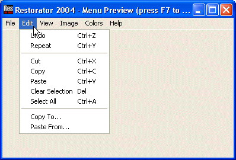
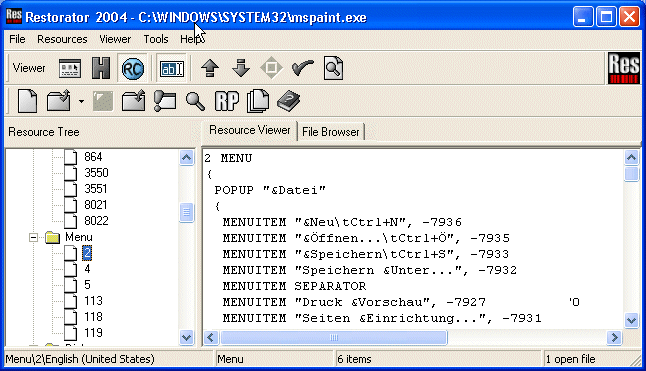
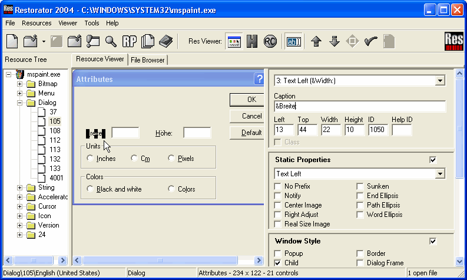
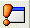

|
Help Overview Manual Tutorials FAQ Purchase Restorator Web |
Restorator
Translation Tutorial
Tutorial: Translating MS Paint
| Note: the screenshots in this tutorial originate from an older version of Restorator. |
MS Paint is the image program that is delivered with Windows. You can find its file "MSPaint.exe" in "C:\Program Files\Accessories" (Windows 95/98/ME) or in "C:\WINNT\system32" (Windows NT/2000/XP).
Again, respect the copyright of programs. You should only modify it (and other programs) for your private use.
1. Translating String resources
Paint has a
large number of "String" resources. Now we will use Restorator's
in-built editor to change them: select a String resource...

...and click on
the "ab" tool button (or press F6).
The display will change to the "RC" form:

In this
tutorial I translate the text into German :

To finalize the changes, I press F8 or the Commit tool button. A little arrow in the Resource Tree reminds me that I have changed this resource.
Like that all text messages may be translated.
2. Translating the menus
Click on the
first menu entry in the Resource tree. As you are still in edit
mode, the menu will now be displayed in "RC" form:

Additionally,
the menu preview window pops up:

While editing the text of the menu, you can press F5 to update the preview.
Translating
menus is exactly done like strings. At the bottom of the "RC" text,
there are some hints about special issues concerning menus.

3. Translating the dialogs
Translating dialogs is easy now. You can translate the text and directly change the layout! You have many options to adjust the style and arrange it to your liking.

[click image to see it in real size]
{kind=link}
4. Translating the Accelerators
Accelerators are shortcut key combinations for often-used functions. For example, many applications define "Ctrl-C" for copying to the clipboard. These shortcuts are stored in the Accelerators resource type.
Each accelerator is assigned to a menu item. In this example, I want to change the accelerator key for the menu item "Open". Normally, it had the key combination "Ctrl-O". Now, in my German version, I would like to have the umlaut "Ctrl-Ö" as accelerator. In the menu resource I saw that the open menu item has the number -7935. So in the accelerators, I look for ID -7935:

I just change it to "Ctrl-Ö" and press F8 to commit it.
5. Saving the new MSPaint
Now save the file as something else, e.g. MSPaint1.exe. Then click the Run toolbutton  and see the difference in your new custom application !
Copyright 1997-2007 by bome.com